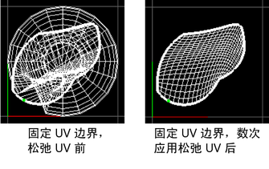
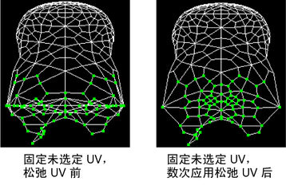

使用这些选项可设置在选择时发生的情况。
注： 尝试优化时，具有非流形 UV 拓扑的模型可能会返回错误。如果发生这种情况，请在启用“非流形几何体”(Nonmanifold geometry)选项的情况下为对象执行网格清理(Mesh Cleanup)，然后再次执行优化。
- 方法(Method)
- 使用该选项可以指定 Maya 用于松弛 UV 贴图的方法。根据您选择的方法，“优化 UV 选项”(Optimize UVs Options)窗口中会显示不同的选项。从下列方法中选择：
- 展开 3D(Unfold3D)
- （默认）使用“展开 3D”(Unfold3D)算法松弛 UV 贴图。请参见下面的“优化”(Optimize)选项。
- 旧版(松弛)(Legacy (relax))
- 使用旧版算法松弛 UV 贴图。请参见“旧版(松弛)”(Legacy (relax))选项。
注： 在 Maya 2014 和早期版本中，“旧版(松弛)”(Legacy (relax))是默认“方法”(Method)。
设置
- 修复非流形几何体(Fix non-manifold geometry)
-
对网格执行的清理操作。如果此选项处于禁用状态，则 Maya 将改为输出一条警告并提供选项来手动运行“清理”(Cleanup)操作。
注： Unfold3D 不会在非流形网格上运行。
优化选项
仅当“展开 3D”(Unfold3D)是选定的“方法”(Method)时，以下选项才可用。
- 迭代次数(Iterations)
- 指定在展开过程完成后执行“优化”(Optimize)算法的次数（例如，值为 0 将展开网格，但不进行任何优化）。
注： 非常高的迭代次数(Iterations)可能会产生意外的结果。
- 曲面角度(Surfangle)
- 控制曲面的强度和角度优化，从而最大限度地减少 UV 贴图中的拉伸和角度错误。默认值为 1。
- 幂(Power)
- 设置优化强度。默认值为 100。
- 防止自边界相交(Prevent self border intersections)
- 启用此选项后（默认），可以避免展开 UV 壳的边界自相交。例如，当边界边围绕自身循环时，该选项会自动解开 UV 壳的边界。
- 防止三角形翻转(Prevent triangle flips)
- 启用此选项后（默认），可以避免退化 UV 贴图。移动 UV 以致某个面与自身重叠时，会出现退化。
房间空间选项
- 贴图大小(像素)(Map size (Pixels))
- 选择一个与纹理贴图大小相对应的预设。
- 房间空间(像素)(Room space (Pixels))
- 指定选定 UV 壳各部分之间的距离。
当“房间空间”(Room space)大于 0 时，可防止纹理溢出 UV 边界。应避免将此值增加到超过其默认值（2 个像素），因为这会降低优化计算的速度并产生扭曲。
以下示例显示了一只手的手指。当“房间空间”(Room space)设置为 0 时，一些手指会重叠。当“房间空间”(Room space)设置为 2 时，手指之间的空间会增加。 注： “防止自边界相交”(Prevent self border intersections)必须处于打开状态，才能显示“房间空间”(Room Space)选项的效果。
注： “防止自边界相交”(Prevent self border intersections)必须处于打开状态，才能显示“房间空间”(Room Space)选项的效果。
“旧版(松弛)”(Legacy (relax))选项
仅当“旧版(松弛)”(Legacy (relax))是选定的“方法”(Method)时，以下选项才可用。
- 固定 UV 边界(Pin UV border)
-
启用此选项以保持边界 UV 的位置。这是默认设置。
 - 固定 UV (Pin UVs)
-
选择要固定的 UV。
- 固定选定 UV (Pin selected UVs)
-
启用此选项以保持选定 UV 的位置。例如，如果希望 UV 非常密集的面上的某一区域有更大的纹理间距，可以选择这些 UV、对其进行放大和固定，然后松弛其余的 UV 以消除放大过程中可能已引入的所有重叠。
- 固定未选定 UV (Pin unselected UVs)
-
启用此选项以保持未选定 UV 的位置。仅松弛选定 UV 时此选项适用。

- 边权重(Edge weights)
- 选择 UV 松弛操作对边的影响方式。
- 一致(Uniform)
- （默认）尝试使所有边的长度相同。
- 世界空间(World space)
- 尝试保留原始世界空间角度（受已固定边界的限制）。
- 最大迭代次数(Maximum iterations)
- 输入将在 UV 上执行的松弛迭代次数，理想的 UV 松弛具有感观性和迭代性。